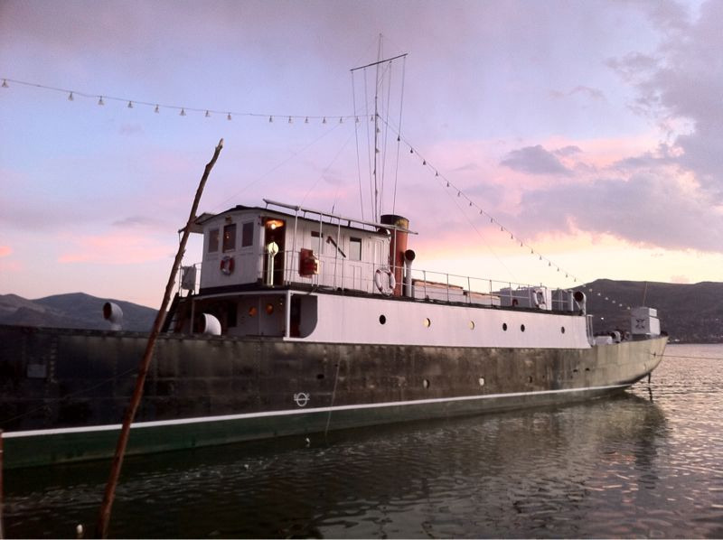

Fri, 01 Oct 2010 05:06:00 · Yavari · Lake Titicaca · Peru · Travel · City · Ship
the yavari ship docked in lake titicaca peru is

The Yavari Ship, docked in Lake Titicaca, Peru, is the world’s oldest and only steamship still running.
Fri, 01 Oct 2010 05:06:00 · Yavari · Lake Titicaca · Peru · Travel · City · Ship

The Yavari Ship, docked in Lake Titicaca, Peru, is the world’s oldest and only steamship still running.